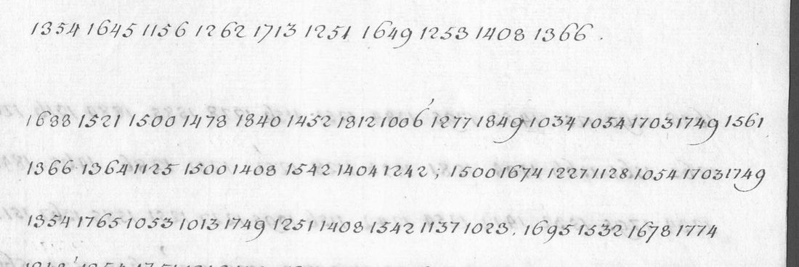
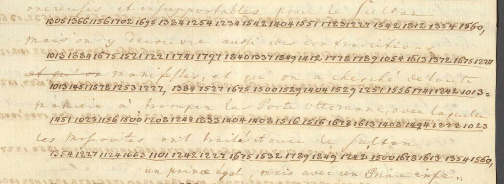

At a glanceKey from adjacent plaintext · partial (87% of the cipher)
- The documents
- Four documents of the Swedish envoys Carl Fredrik Höpken and Edvard Carlson at Constantinople, in one code: a despatch to the King of 15/26 January 1740, Swedish; “Lit. A”, a French memorandum of 1741 on the last Russo-Ottoman treaty; and, received on 2 October 1741, a letter of the comte de Castellane, the French ambassador, and the start of the envoys’ reply, in French, both bare.
- Where
- Riksarkivet, Stockholm, Diplomatica Turcica, SE/RA/2119/2119.1/I/9/21 (R0003582, images 321–331 and a second copy 332–342), I/9/26 (R0003635, image 147) and I/9/27 (R0003636, images 49 and 50 left); catalogue 1771 (split), 2247 and 2248. Not on DECODE.
- The cipher
- Groups of four digits, 1006 to 1915: a syllabary built for Swedish (i/j, u/v, a/å/ä, o/ö not told apart) with word codes for names and terms, several groups for common syllables, no nulls. A different code from the French-glossed pages of the first despatches (images 255–261 of the same volume).
- How it was read
- The despatch carries the Swedish decipherment of the time over its groups; the code list rebuilt from it was frozen and applied, unchanged, to Lit. A, a page of another volume and year: 222 of 282 groups give exactly the gloss’s letters, against at most 51 for shuffled keys. With 26 values from that gloss the key reads the two bare French documents.
- What it says
- The despatch reports the exchange of the signed Swedish-Ottoman defensive treaty. The Castellane letter reports a general divan at the Porte, an invitation to a kind of congress at which “Monsieur de Romanzof” is to be present, and asks the Swedes for their thoughts before a visit to the Porte’s dragoman; the reply thanks him and announces a visit.
- Still open
- Both bare documents are under the 95% bar: 17 groups of the two documents are not in the key (16 have values guessed from the sense, one is unread), five words carry a marked repair, and the exchange continues for about 1,500 groups that are not transcribed. The test of 1741 rests on the contributor’s record for its order, and the bare pages are not the key’s held-out test.
- Credit
- The despatch and the key by Daniel Bourdeau’s project (10 November 2026, AI language-model agents); Lit. A, the Castellane exchange and the 1741 test by WAINUT (a Dutch AI company) with AI language-model agents (pull requests #458 and #459). No human palaeographer checked the digits or the readings.
01 The documents
All four are in the diplomatic correspondence that Carl Fredrik Höpken and Edvard Carlson sent from Pera (Constantinople) to Stockholm. The first is the despatch No. 2 of 15/26 January 1740, in two copies marked duplicate in the same encipherment: images 321–331, where the chancery decipherer struck the groups through and wrote the Swedish plaintext above them, and images 332–342, a second copy (the first two pages glossed, the rest bare) with a note that it came by express on 5 May 1740. It reports the conclusion and exchange of the Swedish-Ottoman defensive alliance treaty.
The others are of 1741. Lit. A is an enclosure to the despatch of 24 February / 4 March 1741: a French memorandum on the treaty between the Porte and the Russians, with the French plaintext of the time written between the underlined cipher rows. The last two have no gloss: a letter of the comte de Castellane, copied in cipher for Stockholm, and the beginning of Höpken and Carlson’s reply, on image 49 and the left page of image 50 of the volume for July to December 1741, which carries the note of receipt, 2 October 1741.

02 The code and its key
The code is a syllabary: most groups stand for a syllable (1006 d, 1013 ma, 1011 me), many syllables have several groups, and word codes stand for the names and terms of the correspondence (1516 for the Porte, 1413 for the King, 1287 for the Grand Vizir, 1265 for Sweden, 1256 for Russia, 1123 for France, 1713 grefwen for count). No group is a null. Groups above 1749 are ordinary syllables here; in the first, French-glossed code of the same volume (folder hopken1739), the highest group is 1749 and the values clash (1532 is Suède there and a syllable inside Swedish words here).
The key was rebuilt from the decipherment written over the despatch: word-level pairs of each gloss word and the groups under it were made by AI agents from the full-size images, and the key made from the pairs of images 322–325 was frozen before the pairs of 326–327 came back. On the groups of 326–327 as first paired, 457 of 598 (76%; 88% of the 522 whose group is in the key) give exactly the piece the pairing assigns, against a mean of 3.5 and a maximum of 33 in 500 shuffled keys. The test was not strictly blind (the agent pairing those pages had the seed values and the earlier pairs in reach). The second copy, 332–342, was transcribed digit by digit by three agents who opened no other file: 2,987 of its 3,082 groups agree in sequence with the first copy, and where they differ the bare digit, which agrees with the key, was taken (116 groups). The final key has 235 confirmed values, 15 with two and 78 with one witness.

03 The test on a page of 1741
Lit. A is a page of another volume, another year and another language than anything the key was built on. Each run of its groups was lined up with its gloss by dynamic programming, and the key was applied unchanged, as frozen from the despatch: 222 of 282 groups (79%) give exactly the letters of the gloss at their place, and 242 of the 282 are in the key, so 92% of those it knows. With the values of the key shuffled among its groups the best of 200 trials gives 51 and the mean 33.4. The word codes were compared through a fixed list of equivalents written in the script (tractat and traité, ottporten and Porte, and so on). This is a held-out test in the strict sense of the data, and its freezing was not an act of the contributor: the key is the one already in the repository for the despatch. One caveat on the page itself: the French gloss is written between the rows and was in view when the digits were read, but they were read before any decoding and none was changed toward the gloss (the contributor’s note); that bears on the digits, not on the key. One agent made both passes of this transcription.
The 26 values the gloss adds are marked in key_1741.tsv (24 new groups; two single values of the frozen key corrected on the gloss, 1504 from r to vo and 1840 from a to au). The letter and the reply were read with that extended key, not with the frozen one: of the letter’s 205 groups 180 are in the frozen key and 191 in the extended one; of the reply’s 269, 245 and 258. The bare pages are therefore not a held-out test of the frozen key. The contributor says that eight values were proposed from the sense on the letter before Lit. A was decoded and all eight were found in the gloss with the same value; that was noted in the working session and not frozen in a file, so it rests on the contributor’s record.
04 The readings
The despatch (Swedish, images 321–331). The envoys report how the Porte’s dragoman brought the signed defensive alliance treaty and asked to delay its exchange and keep it secret, how they argued for a prompt exchange, and how the copies were exchanged on 14/25 January 1740 after a present to Ragib Efendi; they credit the King’s firmness over the Russian frontier, note the French ambassador’s late help and ask for a provisional instruction and full powers. This is the decipherment of the time transcribed word by word and checked: 3,411 of 3,450 groups (98.9%) lie in words whose digits and reading are both confident, and 39 groups in 11 doubtful words are not. A reader of the Swedish gave it grade A.
Lit. A (French, image 147). “The more one examines the last treaty made between the Porte and the Muscovites, the more one finds not only onerous and unbearable conditions for the Sultan but manifest contradictions, and that one has sought in every way to deceive the Porte …”, to be shown article by article, beginning with article 2 on the frontiers (the page breaks off). Against the frozen key 84 of its 122 words are verbatim and 3 have a marked repair; the other 35 rest on values the gloss gives over the same groups. It is the contemporary decipherment checked, and grade A.
Castellane to Höpken and Carlson. Il y a [?eu] au[?jo]urd’hui un divan général à la Porte; après ce divan le drogueman de la Porte est venu m’inviter de la part du Grand Vizir de me rendre dimanche [?prochain] à une espèce de con{grè}s, auquel [?Monsieur] de Roman[?zof] doit se trouver. Si vous avez, [?Monsieur], quelques [?réflexions] à me [?communiquer] relatives à vos intérêts, je serois [?charmé] de pouvoir les recevoir avant que le si[?eu]r de Laria [?aille] chez le drogueman de la Porte, [?où] il doit se rendre demain à huit heures du matin.
A question mark in brackets marks a syllable whose group is not in the key and whose value is guessed from the sense (the guesses sit in 13 of the 94 words); the other cipher words are verbatim, except congrès (one value changed) and aille (a letter added, the cipher writing one a for two). The English: “There was [today] a general divan at the Porte; after it the Porte’s dragoman came to invite me on behalf of the Grand Vizier to go [next] Sunday to a kind of congress, at which Monsieur de Romanzof is to be present …”; he asks the Swedes for their reflections on their interests before Laria goes to the dragoman at eight next morning. The notes read “Romanzof” as very probably Aleksandr Rumyantsev, the Russian ambassador; that identification is the contributor’s, from the content only. Who “Laria” is is not settled: the notes record only that the independent reader recalls a dragoman family of that name at the French embassy, not checked.
The reply. It opens with a heading that decrypts as notre réponse au comte de Castelane, from the same groups as the letter’s own heading, then one sentence in clear script, “nous reçevons dans ce moment la lettre que votre Exc. nous a fait l’honneur de nous écrire, hier au soir”, and goes on in cipher: they were most deeply touched with [joy] and gratitude at the [generous] conduct of Your Excellency concerning the interests of their Court, to which no one in this country [1515] is better able to contribute than an ambassador of France; they intend to go the next evening, God willing, to set out their thoughts on the present interests of Sweden with regard to Russia and the Porte; any accommodation between the Porte and Russia is … (the left page ends here).
05 Counted by the README rule
The headline counts only the two bare documents, because the glossed pages are where the key comes from. Words read verbatim from the signs, guesses, repairs and the one hole not counted: the letter 79 of 94 words (84.0%), the reply 109 of 123 (88.6%), together 188 of 217, 86.6%. Both are read in part; the contributor already counted in this way. The project’s sentence checker gives 0.444 for the letter, just under its 0.45 line, because it counts each guessed word as a hole and the letter’s sentences are long; 0.615 for the reply. A reader of the French found all four sentences of the letter to hold (grade B). The project’s own statistical check of the two bare documents, read with key_1741.tsv (449 read tokens, 125 types, 828 letters), gives −1.952 per letter against −3.483 for random keys of the same structure (z 12.2), verdict pass; it is a check of the reading, not a second held-out test, because the key was extended from Lit. A’s gloss and not fitted to these pages.
06 What remains uncertain
- The letter and the reply together have 17 groups that are not in the key used (eleven in the letter: 1478, 1452, 1520, 1026, 1339, 1438, 1083, 1056, 1409, 1605, 1508; six more in the reply: 1286, 1326, 1515, 1581, 1733, 1747). Sixteen of them are read from the sense (1515 is unread, next item), three of them (1478 eu, 1452 jo, 1605 où) also by recurring in the reply. The glossed runs of the other volumes, which would confirm them, were not worked.
- The reply’s group 1515 is unread (one place). Laria is spelled la-ri-a-[1409]-le with one a for two words; the name may also be “Lari”. Congrès rests on one changed value (1496).
- Doubtful digits: 1840? and 1227? on image 49, 1678? and 1613? on image 50, 1678? and 1442? on image 147, kept doubtful on enlarged crops (illegible).
- The exchange with Castellane runs on for about 1,500 groups over the right page of image 50 and images 51 and 52; they are not transcribed. The same code, so the key should read them.
- Other pages of these volumes in the code of the first despatches (images 40, 106, 139 of I/9/24), in this code (images 8, 54, 100, 240, 286 of I/9/26; 8, 93, 135 of I/9/27) and a three-digit number code (image 99 of I/9/25) were surveyed and not worked. Catalogue 2241, 2242 and 2244 were not opened.
- Castellane’s own letter may survive in clear in the French diplomatic archives (Nantes), which would be a crib; not checked. Both passes of the 1741 transcription were by one agent; a blind reader copied 92 groups from its own crops (images 147, 49, 50) with no disagreement, and at integration the project compared about 300 groups of images 49 and 147 with the transcriptions, no disagreement at that reading. No human has checked.
- The sentence checker gives the Swedish reading of the despatch only 0.095 because it has little Swedish of 1740 to measure against; the reading was graded by a reader.
Full texts
The transcription and the decryption of every document on this page, so that the reading can be used and checked. Short files are shown here; all are in the repository.
despatch_jan1740 (Stockholm, Riksarkivet, Diplomatica Turcica, SE/RA/2119/2119.1/I/9/21 (image series R0003582), images 321-331 (second copy 332-342), 15/26 January 1740)
Höpken and Carlson report to the King how the Porte's dragoman brought the signed defensive alliance treaty and asked to delay its exchange and keep it secret, how they argued for a prompt exchange, and how the exemplars were exchanged on 14/25 January 1740 after a present to Ragib Efendi. They credit the King's firmness over the Russian frontier, note the French ambassador's late help, and ask for a provisional instruction and full powers.
Transcription: transcription.txt
Decryption
# Decoded with key.tsv, word by word; {clear text}; UPPER = value seen once; [1234] = not in the key.
[image 321]
{Dupplett} {17 15/26 Jan. 40.} {upl. i Rådet d. 10 Apr. 1740.} {Stormächtigste Allernådigste Konung!} {Uti wår sista depeche, som war af 5/16 hujus till} {Eders Kongl: Maij:tt och Riks Rådet samt Presidenten} {Högwälborne Hr Grefwe Carl Gyllenborg hwars duplicat} {Wij härhos i underdånighet bifoga, täcktes Eders} {Kongl: Maij:tt i nåder [word inserted above, unread] sig föredraga, huru som} ut-wa-x-li-ngen af de-fe-ns-IV alliance ble-f up-sku-ten i-fra-n da-g ti-l an-na-n {No. 2.}
[image 322]
{samt hwad som} wij fo-r-me-nt wa-ra-de-rt-il or-sa-ken {med mera.} {D. 10/21 hujus} ko-m ottporten-s dro-gue-man ti-l oss och se-d-an ha-n ha-l-sa-t i-fra-n STORVIZIREN och reiseffendin be-ra-tt-de h-an att pa se-ra-GLI-on-s re-it-er-er-de be-fa-l-ni-ng {samt likmätigt} be-me-l-te minister-s e-gne a-stu-n-da-n w-ar tractat {ej(?) alle-} {nast} un-de-r-skri-f-we-n {utan och} ut-le-fo-wer-er-ad i ha-ns ha-nde-r {som han och} {hade} nu ta-git-m-ed s-ig och fra-m-wij-ste de-n-sam-ma sa-ga-DES si-g ha-f-wa or-dre-s att la-ta fo-r-fa-r-di-ga en ti-en-LIG pu-ng att la-gg-a de-ns-AM-ma u-ti och so-m ottporten an-se-r {(Eders} {Kongl: Maij:tt} in-te-re-sse och ba-sta sa-so-m si-tt e-git {/: hwilcket} HA-n och fo-r-da-r att {Eders Kongl: Maij:tt lärer} gi-o-ra me-d he-nn-e {:/} sa ba-l-la-nce-ra-de {man} {intet} att an-fo-r-tro oss att {åtskillige} wi-ck-ti-ge con-si-de-ra-tion-er {[som]} fo-r-an-la-to he-nn-e att a-stu-n-da och on-ska {det} {måtte denna} negociation an-nu na-gon li-ten t-d ha-l-as ty-st {, hwarwid} h-an so-m af si-g si-el-f sa-de att ottporten wi-l-e {giärna} bli-f-wa fo-r-wi-ss-ad om d-en si-d-ste fred-s-tractat-ns e-xe-cu-TION a ryssland-s si-da {Derföre(?)} be-ra-tt-de h-an s-ig ha-f-wa or-dre-s att pro-po-ne-ra ti-l oss om wij {icke} sam-ty-ck-TE {till at} ba-g-ge ex-em-pla-ren af de-[1337?] alliance ma-tt-e {ännu för någon} li-ten t-d ku-nn-a fo-r-wa-ra-s e ha-ns ha-nde-r och wij {likafullt} skrif-wa och be-ra-t-ta wa-rt h-of att sam-ma alliance w-ar slu-ten pa d-et att {Eders Kongl: Maij:tt} ho-ga ra-ti-fi-ca-tion
[image 323]
ma-tt-e hi-[1532?]-sa-n-da-s wij swa-ra-de att {alt hwad som war} ottporten an-ge-na-mt de-t w-ar och sa {Eders Kongl: Maij:tt} an-ge-na-mt {, men at} wij sa-so-m wer-ck-ty-g ti-l wa-n-skap-e-ns un-de-r-ha-l-la-nde och fo-ro-ka-nde {kunde wij} {underlåta(?) at härwid} pa-mi-nn-a att so-m [1313] i {anledning} af ha-ns och de an-dre ottporten-s minister-s gi-or-de fo-r-sa-kri-ng-ar om en pro-mt ut-wa-X-li-ng {som redan(?)} {till} fo-l-je af sa-mm-a lo-f-ten och fo-r-sa-kri-ng-ar bo-rt ske ha-de {flere} {gånger} skrif-f-WIT och be-ra-tt-att {hwad} {som} wa-r sta-d-fa-st och of-we-re-ns-ko-mm-it {; så skulle} d-et nu fa-l-a oss swa-rt och {kunna (?)} ha-FWA en el-AK wa-r-ka-n om wij nu ble-we no-d-ga-de att be-ra-tt-a de-t-ta pro-po-ne-r-de up-sko-f och {således} an-dra och om-ku-l-ka-sta wa-re fo-rr-e re-la-tion-er {och det så mycket mera, som Wij tilförende(?)} re-da-n be-ra-tt-att att h-an dro-gue-man si-el-f be-dt oss {[att]} de-CLA-re-ra {at detta war} en slu-ten negociation fo-r al-la de {som kunde hafwa} {någon} ku-n-skap h-ar om {Alt hwad han(?) nu mera} re-com-me-nde-r-de ty-st-het-en wi-d-ko-mm-er {så är intet twifwelsmål uppå at den ju} {skall blifwa efter åstundan} i ac-ckt-ta-gon me-n ut-wa-x-li-ngen {aldeles intet i det öfri-(?)} {ga(?) så} pro-mo-ve-ra-de de-n-sam-ma {, medan} {som} ma-n ej h-de af no-de-n att fra-m-wij-sa o-ri-gi-na-l ex-em-pla-re-t om ma-n wi-l-e pu-bli-ce-ra en a ba-gg-e si-DO-r of-we-re-ns-ko-mm-en och slu-ten negociation att s-om de-t w-ar he-la wer-l-de-n be-ka-nt att {Eders Kongl: Maij:tt}
[image 324]
con-te-na-nce och ti-l-ru-st-ni-ng-ar em-ot de-n RYSKA-gra-ntz-K {hade förmenligast} ac-ce-le-re-ra-t fred {samt} wa-ri-t or-sa-ken att ryssland sam-ty-ckt {till och} sku-n-da-t up-pa de-n sam-ma {, så är wij häller något twifwelsmål, at icke} ku-n-skap-en om de-nn-e de-f alliance sku-l-e {mycket snarare} bi-dra-ga ti-l en pro-mt e-xe-cu-tion af d-et so-m i sam-ma fred-s-tractat ar sti-pu-le-ra-t an att pa na-git sa-tt wa-ra de-r-ti-l hi-nde-r-lig {At som nu et fartyg låg segelfärdigt till at gå till Marseille, så kunde Wij per det bästa sättet} och me-d al ty-st-het o-wer-sa-n-da ottporten-s or-ig-in-al ex-em-pla-R {; således förr at om den lägenheten går oss utur händerne så skulle Wij wara nödgade en annan gång} och na-r ut-we-x-li-ngen sku-l-e ske att sa-n-da de-t sa-mm-a i bri-st af {annan lägenhet} me-d en co-ur-je-r {hwilken} sku-l-e up-wa-ck-a la-ng-t sto-rr-e up-me-r-k-sam-het och fo-r-or-sa-ka me-ra om-bra-ge {Dessutom som Wij sen[?]} TRACTAT-en wa-ra un-de-r-skri-we-n re-da-n de-n 2-2 DECEMBRE och wij ut-fa-st oss att ra-ti-fi-ca-tion de-R-af sku-l-e wa-ra ha-r in-na-n 4 ma-na-de-r-s fo-r-lo-PP {så blef det} om-o-J-li-git bri-n-ga de-t wij {aldeles} lo-f-wa-t ti-l wa-r-k-sta-l-ig-het ha-n sa-de {hwad} de-t si-d-sta ski-al-et wi-d-ko-mm-er sa be-ho-f-de wij ej wa-ra be-KY-m-ra-de o-wer ra-ti-fi-ca-tion-s te-r-mi-ne-n {på hwilken det wij skulle} ko-mm-a sa no-ga an {medan man} ej ar-na-de ra-k-na
[image 325]
me-d oss so-m me-d an-dra {Och at han förefö[?]git wara så mycket} la-tt-a-re o-wer-ty-ga-d af de-t wij ha-de sa-gt so-m ha-n {andra för detta} wa-ri-t af sa-mm-a ta-n-ka {At han wille} ta-ga al-t sa-mm-an-s ad-re-fe-ren-du-te {till at giöra} de-r-om si-n ra-po-rt och gi-wa oss swa-r de-n {följande} da-gon {För öfrigit giorde han} ma-n-ge pro-te-st-att-ION-er om ottporten-s up-ri-ck-ti-g-het och wa-l-me-ni-ng sa-mt sa-rd-el-es ho-ga-ck-t-ni-ng fo-r {Eders Kongl: Maij:tt härtill} de-nn-e alliance wa-r de-t sta-r-ka-ste be-wij-co so-m ar-DE-n al-dra-fo-rst-a af de-n na-tu-r och {beskaffenhet} so-m ottporten {någonsin} in-ga-tt me-d en an-na-n PUISSANCE {Han sade sig också böra giöra} de-n franska-e ambassadeur-en de-n ju-sti-ce att ha-n {mycket} con-tri-bu-er-att ti-l att up-ly-sa o-go-ne-n pa ottporten-s mi-ni-STRE-r sa-mt ko-mm-it de-m att be-GRI-pa de-nn-e alliance-ns ny-tt-a {hwilken han} sa-gt wa-ra de-t sta-r-ka-ste me-de-l ti-l att gi-o-ra frankrike-s GUA-ra-nt-je kra-F-ti-g {Som han} dro-[1053?]-ma-n ha-de fo-rst wa-ri-t ho-s be-me-l-te ambassadeur {förrän han} rt-m ti-l oss {så märkte Wij fullwäl at han} an-mo-da-t ho-no-m att sa-le-de-s ta-la {; Men Wij blefwo mera förwissade derom,} sa-mm-a af-to-n da wij be-so-ckt-e ambassadeur-en {Han förekom oss, förrän Wij fingo tala[?] och frågade om} ottporten-s dro-gue-man ej ha-de sa-gt na-git om ho-u-m {Hwarpå Wij togo} ti-l-fa-l-e att ta-c-ka ho-n-om fo-r d-en de-l h-an ha-ft i de-nn-e negociation
[image 326]
s-ly-cke-li-ge je-ta-nde {hwilket myket} {fägnade honom, så at han bad oß [en...]ligen (last word unsure)} skrif-wa ti-l wa-rt hof och be-ra-t-TA att frankrike h-ar nu fo-or ti-de-n g-an-ska sto-r cre-di-t w-d ottporten {hwilken} cre-d-it ha-n fo-r-sa-kra-de sko-la bli-wa {helt och hållit} an-wa-nd ti-l {Eders Kongl: Maj:ts} och de-ss ri-cke-s ny-tt-a och fo-r-mo-n {så} S-wa-rt s-om de-t wa-ri-t oss att wij ha-r ti-l-s wa-ri-t no-d-ga-de att be-swa-ra oss of-wer be-me-l-te ambassadeur-s fo-r-fa-ra-nde sa ka-rt ar d-et oss att wij ku-nn-a nu {i underdånighet berätta} {Eders Kongl: Maj:tt} att h-an an-dra-t si-n con-du-i-te och be-GYN-nt att wa-ra oss be-hi-el-PE-lig {hwilken} an-DR-ng wij OB-se-r-ve-ra-t al-t se-da-n de-n si-ste EXPRES an-ko-m i-fra-n VENEDIG sa att wij fo-r-m-ar-ka att de-n sam-ma ma-st ha-wa bra-ckt ho-no-m STRA-n-ga or-dre-s i-fra-n si-tt hof {hwilket} la-r wa-ri-t en wa-r-k-an af grefwen TESSIN-s go-da be-ar-be-ta-nde w-d sam-ma hof s-om ambassadeur {och så låtit (reading of 3rd word unsure)} oss fo-r-sta u-ti si-ne di-SCO-ur-se-r da h-an be-ra-tt-att oss i {hwad} cre-di-t be-me-l-te grefwen sto-d wi-d de-t franska hof {d. 11/22} {hujus berättades} wi-d ottporten att w-ar dro-gue-man att ma-n h-de gi-l-att wa-r me-ni-ng {angående} tractat-ns ut-wa-x-li-ng da ottporten-s dro-gue-man la-t an-mo-da oss att a ny-O ren-skrif-wa wa-rt ex-em-pla-r sa-mt pre-pa-re-ra de de-rt-il no-di-ge ZI-ra-te-rne
[image 327]
sa wi-l ha-n {så snart som} wij wo-ro fa-r-di-ge ko-mm-a och ut-wa-x-la de-n sam-ma wij la-to {d. 12/23} A-er-te-ra ho-no-m att wa-rt ex-em-pla-r w-ar fa-r-di-gt m-en ha-n un-da-n-dro-g si-g att ko-mm-a un-de-r {en och annan} fo-re-w-an-d-ni-ng ti-l de-ss wij om-si-d-er fo-r-ma-r-ckt-e {at något} ny-tt wa-r att-er pa fo-ar-de {hwarom} wij ble-f-wo up-ly-ste af h-on-om si-el-f {som lät} sa-ga oss att wij ej ku-nde un-wi-ka att gi-o-ra ti-l me-k-tu-b-gi-n {eller (written in clear and struck through with the cipher)} sta-t-s-se-cre-te-ra-ren ra-gi-B ef-fe-n-di en an-sta-n-di-g pre-se-nt {ej allenast} fo-r de-t h-an w-ar-it en af de ut-af SULTAN ut-na-MND-e com-mi-ss-ar-je-rne {utan} {och} fo-or d-et ha-n my-ck-et ar-be-ta-t och con-tri-bu-er-att t-il de-n-ne wa-r negociation-s ly-cke-li-ge slu-t {Hwarpå} wij sa-nde be-me-l-te sta-TS-se-cre-te-ra-re {/: som sielf} ar en hu-rt-ig och des-in-te-rr-e-sse-ra-d m-an {:/} en pre-se-nt af tre pu-ng-ar {eller} [1689]-[1771] P-I-as-tre-s wa-rd-e da ge-na-st {samma dag, neml: d. 14/25 hujus} dro-gue-man in-fa-nt si-g ho-s oss och of-wer-le-wer-er-de oss de-t ha-r ho-s {i underdånighet bifogade} ottporten-s ex-em-pla-r s-om wij ut-by-tt-e em-ot wa-rt {efter} {åtskillige [...]liga (second word unsure)} re-ci-pro-QUE com-PLI-MEN-er och fo-r-sa-kri-ng-ar om in-bo-rd-es wa-n-skap och fo-r-tro-lig-het e-me-l-an {Eders Kongl: Maj:tt} och ottporten {Ibland annat} be-ra-tt-de h-an att reiseffendin la-t sa-ga oss att en-or-sa-k ti-l de-nn-e negociation-s go-da ut-SLA-g wa-r {den} franska st-het och he-m
[image 328]
lig-het {med hwilken} wij ne-go-ti-er-att sa-att in-gon me-n-ni-ski-a e-hu-ru up-ma-r-k-sa-me {som åtskillige} wa-ro pa oss ku-nn-att fo-or-ma-r-ka d-et ri-n-ga-ste {eller} ha-ft de-n m-in-sta ro-ken d-er-af {hwaröfwer} h-an la-t fo-r-KLA-ra si-tt sa-rd-el-es no-je sa-le-des {Allernådigste Konung,} ha-wa wij nu {igenom den} al-dra-ho-G-as bi-sta-nd fu-l-gi-or-dt och ef-te-r-ko-mm-it {Eders Kongl: Maij:tts} na-di-G-e or-dre-s och in-stru-c-tion an-ga-en-de en de-fe-ns-ju alliance tractat-s in-ga-e-nde m-ed d-en ottporten {Och som wår nådeste} {dichtan och trachtan är at kunna efter all wår} {ytterste förmåga upfylla wår underdånige} {plicht och skyldighet emot Eders Kongl: Maij:tt, så} {tänckte Wij [sagl: ?], at så snart det Eders Kongl: Maij:tt} me-d al-le-r-na-di-G wa-l-be-ha-g an-se-dt de-sse wa-re fo-r-ra-tt-ni-ng-ar {hwilket är och skall blifwa den största belöning} {Wij i werlden åstunda.} {Hwad widare} ski-al so-m ku-nn-att of-wer-ta-la och be-we-ka ottporten att slu-ta ma-d {Eders Kongl: Maij:tt} de-nn-e alliance tractat {så kunna och böra} wij up-pa wa-re sam-we-ten {underdånigst} fo-r-sa-ha att d-en fe-r-me-te me-d {hwilken Eders Kongl: Maij:tt} fo-r-fa-ri-t d-et fo-or-FLU-t-ne ar-et i-an se-e-nde KRIG-s-ti-l-ru-st-ni-n-ga-rne a de-n RYSKA gra-ntz-en sa-mt d-en fa-rd-ig-het {Eders Kongl: Maij:tt} wij-st ti-l att as-si-ste-ra ottporten h-ar {förnemligast} be-we-ckt he-nn-e t-il al er-ka-ntz-lo sa-mt fo-r-ma-tt he-nn-e att so-ka ti-l att fo-r-bi-n-da si-g m-ed {Eders Kongl: Maij:tt} u-ti en sa na-ra
[image 329]
wa-n-skap om {hwilken} ho-n na-gra ar bo-rt att tro-dt att {Eders Kongl: Maij:tt} wa-ri-t a si-n si-da sa li-te-t m-an {och det förmedelst} de la-ng-e up-sko-f och ti-d-se-ns ut-DRA-ck-te-r att fa swa-r i-fra-n SWERIGE up-pa de-ss re-i-te-re-ra-de an-b-UD af SAM-ma wa-n-skap-tractat att wij {aldrig} fo-r an-nu ku-nn-att of-wer-ty-ga he-nn-e {at åtskillige} fa-ta-li-te-te-r me-n {aldeles intet} bri-st af go-d wi-l-ga och up-ri-c-k-ti-g-het a {Eders Kongl: Maij:tts} si-da wa-ri-t or-sa-ken ti-l de-ss-e DRO-g-s-ma-l {Wij kunna ej heller [undra ?] dertill at icke} de-n franska ambassadeur-s go-de of-fi-ci-er wa-ri-t ti-l na-gon ny-tt-a nu wi-d slu-te-t af negociation {och det hafwa Wij äfwenwäl} la-ti-t be-me-l-te ambassadeur fo-r-sta {hälst som} ha-n ar i sto-r cre-di-t h-oss na-r-wa-ra-nde mi-ni-ste-re och {kommer ännu at} na-gon t-d re-si-de-ra h-ar och K-an {således} wa-ra oss {til widare} ti-en-st {hwad} ny-tt-a och fo-rd-el ed-er-s konglmajt h-ar att fo-r-wa-n-ta af de-nn-e alliance {såsom} et go-dt och kra-f-ti-gt me-de-l att h-al-la ryssland ti-l-ba-ka i-fra-n {hwarjehanda} o-ro-lig-het-s fo-r-of-wa-nde em-ot de-ss gra-nn-ar {det kunde} ed-er-s konglmajt ba-st si-el-f {efter sin} ho-ga wij-s-het ef-te-r-si-nn-a och ski-ar-sko-da {Det böra Wij underdånigst säja at som ofwannämnde} ed-er-s konglmajt-s i ac-ckt ta-gne con-du-i-te wi-d de {[således ?] är} e-XI-ste-ra-de con-ju-n-c-tu-re-rne wa-ri-t h-oss ottporten d-et ma-st be-we-ka-nde ski-al-et t-il de-n-ne alliance-ns slu-ta-nde {så är och blir den samma äfwenwäl} de-n sa-kra-ste ga-ra-nt fo-r de-ss ef-te-r-le-f-wa-nde och i ac-ckt ta-ga-nde a ottporten-s si-da d-en sto-r-sta ny-tt-an so-m
[image 330]
{Eders Kongl: Maij:tt} ka-n ha-mt-a d-er-af i-fra-n d-en-ne si-d-an bli-r n-ar ottporten {ser [.]ingen (two clear words at line end and line start, second unsure)} t-vu-ngen ig-en-om ryssland-s con-du-i-te {resp: och} af e-git be-r-ad {förmedelst} mi-ni-ste-re-ns bo-je-l-se ko-mm-er att fa na-gon de-me-le me-d ryssland i {hwilcken} ha-nde-l-se ed-er-s konglmajt ska-l ku-nn-a ut-be-ti-n-ga s-ig h-wa-d wi-l-ko-[1640]-r {Eders Kongl: Maij:tt} K-an a-stu-n-da {Hwarföre det synes oß under-} {dån. oförgripeligen} bli-f-wa no-di-gt att ed-er-s konglmajt la-te-r fo-r-se de-ss ha-r re-si-de-ra-nde minister-r {resp:} minister m-ed en pro-vi-si-on-el in-stru-c-tion och fu-l-ma-ckt pa de-t {igenom} en sa la-ng-sam co-rr-e-SPO-nde-nce so-m {för} d-en la-n-ga wa-gon gi-or o-un-wi-cke-lig {är} go-de ti-l-fa-l-en ej ma-tt-e ga ut-ur ha-nde-rne d-et ga-m-la ha-te-t so-m de-nn-e na-tion h-ar ti-l ryssland {är} {mera än} fo-r-du-b-BLA-t {igenom denna} si-ste t-wi-sti-g-he-ten sa att fred {[u.pp.ligen] (clear word unread)} la-r bli-wa la-ng-wa-ri-g {och [både Keis:le ?] (two clear words unsure)} wi-d fo-r-sta om-by-t-ni-ng af mi-ni-ste-re lo-pa fa-ra att of-wer-an-da-ka-sta-s sa att ed-er-s konglmajt s-minister-r h-ar ku-nn-a ef-te-r wa-r {underdån. oförgripelige} ta-n-ka ej gi-o-ra ny-t-ti-ga-re ti-en-st an att al-ti-d {på tienligit och anständigt sätt} ha-l-a ottporten-s minister-r-s OG-on up-ne of-wer ryssland-s al-t fo-r sto-ra och di-SPRO-po-r-tion-er-de MA-ckt {samt öfwer} no-d-wa-n-di-g-he-ten att re-du-ce-ra {samt} ma-ckt in-n-om de ga-m-le SKRA-n-ko-rne {Hwad} subsidier-ne wi-d-ko-mm-er {så hafwa wij} fo-r ga-n-ska ma-ng-e och wi-ck-ti-ge ski-al ej ha-l-it fo-r ra-de-li-gt {att nu för} sta-r-ckt YR-ka de-r pa {hälst}
[image 331]
{hos} de-nn-e my-ck-et mi-ss-ta-n-k-sam-me NATION {som kunde} tro att ed-er-s konglmajt ej ha-de an-n-an vu-e m-ed alliance-n an {allenast att} fa be-me-l-te subsidier {At det och warit} o-mo-je-li-gt att nu fa de-m {det lärer klarl:n} se-s de-r-af att en sa e-gon-ny-tt-ig mi-ni-ste-re so-m de-n na-r-wa-ra-nde ar {[ej ?] kunnat} em-ot-sta et sa-da-nt an-bu-d {som det} wa-ri-t att fa be-ha-l-a fi-er-de-d-el-en me-n n-ar ca-SU-s ex-IS-te-ra-r af na-gon ac-ti-vi-te-t {så will det} ej bli-wa swa-rt att fa al-t {hwad som} ka-n a-stu-n-da-s och [1640]-pro-f-wa-s no-di-gt {hälst} om frankrike so-m {tillika med} ed-er-s konglmajt al-le-na ha-f-wer na-gon cre-di-t wi-d de-tt-a hof al-ti-d se-con-de-ra-r ed-er-s konglmajt vu-er och in-ten-tion-er ho-s de-n TURK-i-ske mi-ni-ste-ren {Med all Undersåtelig zèle och Wördnad fram-} {härda wij till dödsstunden} {Stormäcktigste Allernådigste Konung} {Eders Kongl. Maytts} {Pera i Constantinopel} {d. 15/26 Jan: 1740} {Allerunderdånigste och tropliktigste} {tienare och undersåtare} {C: F: v: Höpken} {E: Carlson}Reading
# The contemporary Swedish decipherment with the clear text, in order. [word ?] = doubtful (see the note column of the pairs). [image 321] Dupplett 17 15/26 Jan. 40. upl. i Rådet d. 10 Apr. 1740. Stormächtigste Allernådigste Konung! Uti wår sista depeche, som war af 5/16 hujus till Eders Kongl: Maij:tt och Riks Rådet samt Presidenten Högwälborne Hr Grefwe Carl Gyllenborg hwars duplicat Wij härhos i underdånighet bifoga, täcktes Eders Kongl: Maij:tt i nåder [word inserted above, unread] sig föredraga, huru som Utwäxlingen af defensive alliancen blef upskuten ifrån dag till annan No. 2. [image 322] samt hwad som wij förmente wara dertil orsaken med mera. D. 10/21 hujus kom Ottom: Portens drogueman till oss och sedan han helsat ifrån Stor Viziren och Reiseffendin berättade han at på Seragliens reitererade befallning samt likmätigt bemälte Ministers egna åstundan war tractat ej(?) alle- nast underskrifwen utan och utlefwererad i hans händer som han och hade nu tagit med sig och framwiste den samma sägandes sig hafwa ordres at låta förfärdiga en tienlig pung att lägga den samma uti Och som Ottom: Porten anser (Eders Kongl: Maij:tt interesse och bästa såsom sitt egit /: hwilcket han och förmodar att Eders Kongl: Maij:tt lärer giöra med henne :/ så ballancerade man intet at anförtro oss at åtskillige wicktige considerationer [som] föranlåta henne att åstunda och önska det måtte denna negociation ännu någon liten tid hållas tyst , hwarwid han som af sig sielf sade att Ottom: Porten wille giärna blifwa förwissad om den sidsta fredstractatens execution å Rysslands sida Derföre(?) berättade han sig hafwa ordres att proponera till oss om wij icke samtyckte till at bägge exemplaren af dess alliancen måtte ännu för någon liten tid kunna förwaras [i ?] hans händer och wij likafullt skrifwa och berätta wårt håf at samma alliance war sluten på det att Eders Kongl: Maij:tt höga ratification [image 323] måtte hitsändas wij swarade att alt hwad som war Ott: Porten angenämt det war och så Eders Kongl: Maij:tt angenämt , men at wij såsom wärcktyg till wänskapens underhållande och förökande kunde wij underlåta(?) at härwid påminna att som [v: Haren(?) ?] i anledning af hans och de andre Ott: Portens Ministers giorde försäkringar om en promt utwäxling som redan(?) till följe af samma löften och försäkringar bordt ske hade flere gånger skrifwit och berättat hwad som war stadfäst och öfwerenskommit ; så skulle det nu falla oss swårt och kunna (?) hafwa en elak wärkan om wij nu blefwe nödgade att berätta detta proponerade opskof och således ändra och omkullkasta wåre förre relationer och det så mycket mera, som Wij tilförende(?) redan berättat att han Drogueman sielf bedt oss [att] declarera at detta war en sluten negociation för alla de som kunde hafwa någon kundskap här om Alt hwad han(?) nu mera recommenderade tystheten widkommer så är intet twifwelsmål uppå at den ju skall blifwa efter åstundan i ackt tagen men utwäxlingen aldeles intet i det öfri-(?) ga(?) så promoverade den samma , medan som man ej hade af nöden att framwisa original Exemplaret om man wille publicera en å bägge sidor öfwerenskommen och sluten negociation Att som det war hela werlden bekant att Eders Kongl: Maij:tt [image 324] contenance och tillrustningar[ne] emot den [Ryska gränsen ?] hade förmenligast accelererat Fred samt warit orsaken att Ryssland samtyckt till och skyndat uppå den samma , så är wij häller något twifwelsmål, at icke kundskapen om denne defens: alliancen skulle mycket snarare bidraga till en promt execution af det som i samma Freds tractat är stipulerat än att på något sätt wara dertil hinderlig At som nu et fartyg låg segelfärdigt till at gå till Marseille, så kunde Wij per det bästa sättet och med all tysthet öfwersända ottomanniska Portens original Exemplar ; således förr at om den lägenheten går oss utur händerne så skulle Wij wara nödgade en annan gång och när utwäxlingen skulle skie att sända det samma i brist af annan lägenhet med en courier hwilken skulle uppwäcka långt större upmärksamhet och förorsaka mera ombrage Dessutom som Wij sen[?] Tractaten wara underskrifwen redan den 22 Decembre och wij utfäst oss att ratification deraf skulle wara här innan 4 månaders förlopp så blef det omöjeligt bringa det wij aldeles lofwat till werkställighet Han sade hwad det sidsta skiälet widkommer så behöfde wi ej wara bekymrade öfwer ratifications terminen på hwilken det wij skulle komma så noga an medan man ej ärnade räkna [image 325] med oss som med andra Och at han förefö[?]git wara så mycket lättare öfwertygad af det wi [hade] sagt som han andra för detta warit af samma tancka At han wille taga alt sammans ad referendum till at giöra [derom] sin rapport och gifwa oss swar den följande dagen För öfrigit giorde han många protestationer om Ott: Portens uprichtighet och wälmening samt särdeles högachtning för Eders Kongl: Maij:tt härtill denne alliance war det starckaste [bewijs ?] som är den allraförsta af den natur och beskaffenhet som Ottom: Porten någonsin ingått med en annan Puissance Han sade sig också böra giöra den Fransöske ambassadeuren den justice att han mycket contribuerat till att upplysa ögonen på Portens ministrer samt kommit dem att begripa denne alliancens nytta hwilken han sagt wara det starckaste medel [til] att giöra Franckrikes guarantie kraftig Som han Drogueman hade först warit hoos bemelte Ambassadeur förrän han kom till oss så märkte Wij fullwäl at han anmodat honom att således tala ; Men Wij blefwo mera förwissade derom, samma afton då wij besökte ambassadeuren Han förekom oss, förrän Wij fingo tala[?] och frågade om Ott: Portens Drogueman [ej] hade sagt något om honom Hwarpå Wij togo tillfälle att tacka honom för den dehl han haft i denne negociation [image 326] [negociation]s lyckeliga [slutande ?] hwilket myket fägnade honom, så at han bad oß [en...]ligen (last word unsure) skrifwa till wårt Hof och berätta att Franckrike har nu för tiden ganska stor Credit wid Ott: Porten hwilken Credit han försäkrade skola blifwa helt och hållit anwänd till Eders Kongl: Maj:ts och dess Rikes nytta och förmohn så swårt som det warit oß att wij här tils warit nödgade att beswära oß öfwer bemälte Ambassadeurs förfarande så kärt är det oß att [wij] kunna nu i underdånighet berätta Eders Kongl: Maj:tt att han ändrat sin conduite och begynt att wara oß behielpelig hwilken ändring wij observerat alt sedan den sidsta Exprès ankom ifrån Venedig så at wij förmärka att den samma måst hafwa bracht honom stränga ordres ifrån sitt Hof hwilket lär warit en wärkan af Grefwen Teßins goda bearbetande wid samma hof som Ambassadeuren och så låtit (reading of 3rd word unsure) oß förstå uti sine discourser då han berättat oß i hwad credit bemälte grefwen stod wid det franska hofwet d. 11/22 hujus berättades wid Ott: Porten åt wår Drogeman at man hade gillat wår mening angående tractatens utwäxling då Ott: Portens Drogeman lät anmoda oß att å nyo renskrifwa wårt exemplar samt preparera de dertil nödiga Ziraterne [image 327] så wille han så snart som wij woro färdiga komma och utwäxla den samma Wij läto d. 12/23 avertera honom at wårt Exemplar war färdigt men han undandrog sig att komma under en och annan förewändning till deß wij omsider förmärkte at något nytt war åter på färde hwarom wij blefwo uplyste af honom sielf som lät säga oß at wij ej kunde undwika at giöra till Mecktubgin eller (written in clear and struck through with the cipher) Statssecreteraren Ragib Effendi en anständig present ej allenast för det han warit en af de utaf Sultan utnämnde Commissarierne utan och för det han mycket arbetat och contribuerat til denna wår negociations lyckeliga slut Hwarpå wij sände bemälte Statssecreterare /: som sielf är en hurtig och desinteresserad man :/ en present af [tre] Pungar eller [1500 ?] Piastres hwarpå då genast samma dag, neml: d. 14/25 hujus Drogeman infant sig hos oß och öfwerlefwererade oß det här hos i underdånighet bifogade Ott: Portens Exemplar som wij utbytte emot wårt efter åtskillige [...]liga (second word unsure) reciproque complimenter och försäkringar om inbördes wänskap och förtrolighet emellan Eders Kongl: Maj:tt och Ott: Porten Ibland annat berättade han att Reis Effendi lått säga oß at en orsak til denne negociations goda utslag war den fransyska [h..]tighet och hem[lighet] [image 328] [hem]lighet, med hwilken wij negocierat, så at ingen menniskia, ehuru upmärksamme som åtskillige woro på oß, kunnat förmärka det ringaste eller haft den minsta röken deraf hwaröfwer han låt förklara sitt särdeles nöije. Således, Allernådigste Konung, hafwa wij nu igenom den [aldrahögstes ?] bistånd fullgiordt och efterkommit Eders Kongl: Maij:tts nådige ordres och instruction angående en defensive alliance tractats ingående med den Ott: Porten. Och som wår nådeste dichtan och trachtan är at kunna efter all wår ytterste förmåga upfylla wår underdånige plicht och skyldighet emot Eders Kongl: Maij:tt, så tänckte Wij [sagl: ?], at så snart det Eders Kongl: Maij:tt med [allernådigst ?] wälbehag ansedt deße wåra förrättningar, hwilket är och skall blifwa den största belöning Wij i werlden åstunda. Hwad widare skiäl, som kunnat öfwertala och beweka Ott: Porten at sluta med Eders Kongl: Maij:tt denne alliance tractat så kunna och böra wij uppå wåra samweten underdånigst [försäkra ?] at den fermeté med hwilken Eders Kongl: Maij:tt förfarit det förflutna året i an[seende] [an]seende till krigsrustningarne å [den] Ryska gräntzen, samt den färdighet Eders Kongl: Maij:tt wist til at assistera Ott: Porten, har förnemligast bewekt henne till all erkäntzlo samt förmått henne at [söka] till att förbinda sig med Eders Kongl: Maij:tt uti en så nära [image 329] wänskap, om hwilken hon några år bort åt trodt at Eders Kongl: Maij:tt warit, å sin sida, så litet mån och det förmedelst de långe upskof och tidsens utdräckter at få swar ifrån Swerige uppå deß reitererade anbud af samma wänskapstractat at wij aldrig för ännu kunnat öfwertyga henne at åtskillige fataliteter, men aldeles intet brist af god wilja och uprichtighet å Eders Kongl: Maij:tts sida warit orsaken till deße drögsmåhl. Wij kunna ej heller [undra ?] dertill at icke den franska Ambassadeurens goda officier warit till någon nytta nu wid slutet af negociation och det hafwa Wij äfwenwäl låtit bemelte ambassadeur förstå hälst som han är i stor credit hos närwarande ministere och kommer ännu at någon tid residera har och kan således wara oß til widare tienst hwad nytta och fördehl Eders Kongl. Majt har at förwänta af denne alliance såsom et godt och krafftigt medel att hålla Ryßland tillbaka ifrån hwarjehanda oroligheters föröfwande emot deß grannar det kunde Eders Kongl. Majt bäst sielf efter sin höga wishet eftersinna och skiärskåda. Det böra Wij underdånigst säja at som ofwannämnde Eders Kongl. Majts i ackt tagne conduite wid de [således ?] är existerade conjuncturerne warit hos Ott: Porten det mäst bewekande skiähl till denne alliances slutande, så är och blir den samma äfwenwäl den säkraste garant för deß efterlefwande och i ackt tagande å Portens sida. Den största nyttan, som [image 330] Eders Kongl: Maij:tt kan hemta deraf ifrån denna sidan blir när Ott: Porten ser [.]ingen (two clear words at line end and line start, second unsure) twungen igenom Ryßlands conduite resp: och af eget b[e]råd förmedelst ministerens böjelse kommer att få någon demelé med Ryßland i hwilcken händelse Eders Kongl Majt skall kunna utbetinga sig hwad [willkor ?] Eders Kongl: Maij:tt kan åstunda Hwarföre det synes oß under- dån. oförgripeligen blifwa nödigt at Eders Kongl Majt låter förse deß här residerande Ministrer resp: ministre med en provisionel instruction och fullmackt på det igenom en så långsam correspondence som för den långa wägen giör oundwikelig är goda tillfällen ej måtte gå utur händerne det gamla hatet som denne nation har till Ryßland är mera än fördubblat igenom denna sista twistigheten så at fred [u.pp.ligen] (clear word unread) lärer blifwa långwaracktig och [både Keis:le ?] (two clear words unsure) wid förstå ombytning af ministere löpa fara att öfwerändakastas så at Eders Kongl Majts Ministrer här kunna efter wår underdån. oförgripelige tanka ej giöra nyttigare tienst än att alltid på tienligit och anständigt sätt hålla Ott: Portens Ministers ögon öpne öfwer de [Ryßlands] alt för stora och disproportionerade Mackt samt öfwer nödwändigheten att reducera samt mackt inom deß gamla skrankor Hwad subsidierne widkommer så hafwa wij för ganska många och wicktige skiähl ej hållit för rådeligt att nu för starckt yrcka der på hälst [image 331] hos denne myket mißtänksamma nation som kunde tro att Eders Kongl Majt ej hade annan vüe med alliancen än allenast att få bemelte subsidier At det och warit omögeligit at nu få dem det lärer klarl:n ses deraf att en så egennyttig Ministere som den närwarande är [ej ?] kunnat emotstå et sådant anbud som det warit att få behålla fierdedelen men när casus existerar af någon activitet så will det ej blifwa swårt att få alt hwad som kan åstundas och [[pröfwas] ?] nödigt hälst om Franckrike som tillika med Eders Kongl Majt allena hafwer någon credit wid detta Hof altid Seconderar Eders Kongl Majtts vüer och intentioner hoos den Turckiske Ministeren Med all Undersåtelig zèle och Wördnad fram- härda wij till dödsstunden Stormäcktigste Allernådigste Konung Eders Kongl. Maytts Pera i Constantinopel d. 15/26 Jan: 1740 Allerunderdånigste och tropliktigste tienare och undersåtare C: F: v: Höpken E: Carlson
Translation
# English translation of reading_sv.txt (10 Nov 2026). [..?] = a word doubtful in the reading; (...) = translator's note. # The whole despatch No. 2 of 15/26 January 1740, images 321-331. [image 321] (Marked "Duplicate"; archive date 15/26 Jan. 1740; chancery note, first word doubtful: read in the Council 10 April 1740.) Most Mighty, Most Gracious King! In our last despatch, which was of the 5/16 of this month to Your Royal Majesty and the Council of the Realm and to the President, the high-born Count Carl Gyllenborg, of which we humbly enclose the duplicate, Your Royal Majesty will graciously have had laid before him how the exchange of the defensive alliance was put off from day to day. (No. 2.) [image 322] and what we supposed [to be] the cause, and more. On the 10/21 of this month the Ottoman Porte's dragoman came to us, and after greeting us from the Grand Vizier and the Reis Efendi he reported that, on the Seraglio's repeated command and in keeping with the said ministers' own wish, the treaty was not only signed but also delivered into his hands, which he had now brought with him, and he showed it, saying that he had orders to have a suitable purse made to lay [it in]. And as the Ottoman Porte regards Your Royal Majesty's interest and good as its own (which it also [expects] that Your Royal Majesty will do with it), they did not hesitate to confide to us that several weighty considerations lead it to wish and desire that this negotiation be kept quiet for some little time yet; at which he said, as if of himself, that the Ottoman Porte would gladly be assured of the execution of the last peace treaty on Russia's side. Therefore, he said, he had orders to propose to us whether we would not agree that both exemplars of this alliance might for some little time yet be kept [in] his hands, and that we should all the same [write] and report to our court that the alliance was concluded, so that Your Royal Majesty's high ratification [image 323] might be sent here. We answered that all that was agreeable to the Ottoman Porte was also agreeable to Your Royal Majesty, but that we, as instruments for maintaining and [increasing] the friendship, could not omit to point out that, as [we?], on the strength of his and the other Porte ministers' assurances of a prompt exchange, which according to those promises and assurances ought already to have taken place, had several times written and reported what was confirmed and agreed, it would now fall hard on us, and could have an [ill] effect, if we were now obliged to report this proposed delay and so to alter and overturn our earlier reports; and the more so as we had already reported that he, the dragoman himself, had asked us to declare that this was a concluded negotiation to all who might have any knowledge of it. As for the [secrecy] he now recommended, there is no doubt that it shall be [observed] as desired, but [the exchange] in no way promoted it; for one had [no] need to show the original exemplar if one wished to make public a negotiation agreed and concluded on both sides. That, as it was [known] to the whole world that Your Royal Majesty's [image 324] bearing and armaments [towards] the [Russian frontier] had most probably hastened the peace and been the cause that Russia agreed to and pressed for it, so we have no doubt either that knowledge of this defensive alliance would much sooner contribute to a prompt execution of what is stipulated in the same peace treaty than in any way hinder it. That, as a vessel now lay ready to sail for Marseilles, we could by the best means and in all secrecy send over the Ottoman Porte's original exemplar; so that if this opportunity slipped from our hands we should be obliged another time, when the exchange took place, to send it for want of another opportunity by a [courier], which would arouse far greater attention and cause more umbrage. Besides, as we [saw] the treaty to be signed already on 22 December, and we had pledged that its ratification should be here within four months, it became impossible to carry out what we had firmly promised. He said that, as to the last reason, we need not be troubled about the term of ratification, on which we should [not] have to be so exact, since they did not mean to reckon [image 325] with us as with others. And that he [professed] to be the more easily convinced of what we had said as he had himself long been of the same mind. That he would take it all ad referendum, to make his report on it and give us an answer the following day. For the rest he made many protestations of the Ottoman Porte's sincerity and good will and of its particular esteem for Your Royal Majesty, of which this alliance was the [strongest] [proof], being the very first of its nature and kind that the Ottoman Porte had ever entered into with another power. He said he ought also to do the French ambassador the justice that he had contributed much to opening the eyes of the Porte's ministers and brought them to grasp the usefulness of this alliance, which he had said was the strongest means of making France's guarantee effective. As the dragoman had first been with the said ambassador before he came to us, we saw well enough that the ambassador had asked him to speak so; but we were made surer of it the same evening, when we visited the ambassador. He forestalled us before we could speak and asked whether the Porte's dragoman had not said something about him. Whereupon we took occasion to thank him for the part he had had in this negotiation's [image 326] happy [conclusion], which pleased him much, so that he asked us [earnestly?] to write to our court and [report] that France has at present [very] great credit with the Ottoman Porte, which credit, he assured us, would be used wholly for the benefit and advantage of Your Royal Majesty and his realm. Hard as it has been for us that we have until now been obliged to complain of the said ambassador's conduct, so glad are we that we can now humbly report to Your Royal Majesty that he has changed his conduct and begun to be helpful to us; which change we have observed ever since the last express arrived from Venice, so that we perceive that it must have brought him strict orders from his court, which must have been an effect of Count Tessin's good work at that court, as the ambassador also gave us to understand in his discourses, when he told us in what credit the said count stood at the French court. On the 11/22 of this month our dragoman was told at the Ottoman Porte that our view about the exchange of the treaty had been approved, when the Porte's dragoman had us asked to [write out] our exemplar afresh and to prepare the ornaments needed for it; [image 327] he would then come and exchange it as soon as we were ready. On the 12/23 we let him know that our [exemplar] was ready, but he avoided coming [under] one pretext and another, until at last we [perceived] that something new was again [afoot], of which we were [informed] by himself, who sent word that we could not avoid making to the [Mektupçu] or Secretary of State, Ragib Efendi, a fitting present, not only because he had been one of the commissioners named by the Sultan but also because he had worked much and contributed to the happy conclusion of this our negotiation. Whereupon we sent the said Secretary of State (who is himself a brisk and disinterested man) a present of [three?] purses or [1,500] [piastres], [whereupon] at once the same day, namely the 14/25 of this month, the dragoman presented himself to us and delivered to us the Ottoman Porte's exemplar, humbly enclosed herewith, which we exchanged [for] ours after various [...] reciprocal compliments and assurances of mutual friendship and confidence between Your Royal Majesty and the Ottoman Porte. Among other things he reported that the Reis Efendi had sent word to us that one cause of this negotiation's good outcome was the French [ambassador's ...] and the [image 328] secrecy with which we had negotiated, so that no one, attentive as several were to us, had been able to notice the least thing or had the slightest scent of it, at which he declared his particular pleasure. Thus, Most Gracious King, we have now, by the help of the [Most High], fulfilled and carried out Your Royal Majesty's gracious orders and instruction for entering into a treaty of defensive alliance with the Ottoman Porte. And as our only thought and striving is to fulfil, to the utmost of our power, our humble duty and obligation to Your Royal Majesty, we long [greatly] to hear that Your Royal Majesty has regarded these our proceedings with [most gracious] approval, which is and shall be the greatest reward we desire in the world. As to the further reasons that persuaded and moved the Ottoman Porte to conclude this treaty of alliance with Your Royal Majesty, we can and must on our consciences most humbly [assure] that the firmness with which Your Royal Majesty acted last year in regard to the armaments on the Russian frontier, and the readiness Your Royal Majesty showed to assist the Ottoman Porte, chiefly moved it to all gratitude and brought it to [seek] to bind itself with Your Royal Majesty in so close [image 329] a friendship, about which it had for some years believed that Your Royal Majesty for his part cared so little, and that because of the long delays and drawing-out of time in getting an answer from Sweden to its repeated offers of that treaty of friendship, that we have never until now been able to convince it that various mischances, and not at all a want of good will and sincerity on Your Royal Majesty's side, were the cause of these delays. Nor can we [deny] that the French ambassador's good offices were of some use now at the close of the negotiation, and we have also let the said ambassador understand this, the more as he is in great credit with the present ministry and will reside here for some time yet and so can be of further service to us. What use and advantage Your Royal Majesty has to expect from this alliance, as a good and effective means of holding Russia back from committing all kinds of disturbances against its neighbours, Your Royal Majesty can best consider and judge himself in his high wisdom. This we must most humbly say: as Your Royal Majesty's above-mentioned conduct in the conjunctures [that then] existed was with the Ottoman Porte the most moving reason for concluding this alliance, so it is and remains also the surest guarantor of its observance on the Porte's side. The greatest benefit that [image 330] Your Royal Majesty can draw from it on this side will come when the Ottoman Porte finds itself forced by Russia's conduct, or of its own counsel through the ministry's inclination, into some quarrel with Russia, in which event Your Royal Majesty will be able to stipulate what [conditions] he may desire. It therefore seems to us, in our humble opinion, necessary that Your Royal Majesty have his minister or ministers residing here furnished with a provisional instruction and full powers, so that through a correspondence as slow as the long road makes unavoidable good opportunities may not slip from our hands. The old hatred this nation bears Russia is more than doubled by this last quarrel, so that the peace will [hardly] be lasting and runs the risk of being overturned at the first change of ministry; so that Your Royal Majesty's ministers here can, in our humble opinion, do no more useful service than always, in a fitting and proper way, to keep the eyes of the Porte's ministers open to Russia's all too great and disproportionate power, and to the necessity of reducing that power within its old bounds. As to the subsidies, we have for very many weighty reasons not thought it advisable to press hard for them now, least of all [image 331] with this very suspicious nation, which might believe that Your Royal Majesty had no other aim with the alliance than to get the said subsidies. That it was also impossible to get them now will be seen clearly from the fact that so self-interested a ministry as the present one was able to resist such an offer as that of keeping a quarter. But when the case of some activity arises, it will not be hard to get all that can be desired and [found] necessary, especially if France, which alone together with Your Royal Majesty has any credit at this court, always seconds Your Royal Majesty's views and intentions with the Turkish ministry. With all a subject's zeal and reverence we remain until the hour of death, Most Mighty, Most Gracious King, Your Royal Majesty's most humble and most dutiful servants and subjects, C. F. v. Höpken, E. Carlson. Pera in Constantinople, 15/26 January 1740.
Lit. A, image 147: memorandum on the last Russo-Ottoman treaty
The more one examines the last peace treaty between the Porte and the Muscovites, the more one finds conditions onerous and unbearable for the Sultan, manifest contradictions, and attempts to deceive the Porte, which the Muscovites treated as an inferior prince on whom they meant to impose laws; this is to be shown article by article, beginning with article 2 on the frontiers (breaks off).
Transcription
# reconciled (pass 1 + pass 2; settled on 0.9x and 2x crops); ? = digit doubtful; ' = stroke (accent) over the group H01 1566 1227 1675 1156 1759 1404 1251 1384 1361 1500 1024 1366 1354 1251 1404 1451 1282 1360 H02 1251 1448 1870 1158 1655 1367 1408 1516 1384 1354 1227 1124 1663 1751 1242 1227 , 1566 1227 H03 1675 1521 1251 1221 1741 1797 1585 1749 1405 1741 1354 1390 1412 1778 1054 1372 1675 1227 H04 1305 1366 1156 1702 1695 1384 1254 1234 1542 1404 1551 1723 1227 1542 1812 1354 1560 , H05 1013 1884 1675 1521 1221 1741 1797 1840 1337 1849 1412 1778 1789 1054 1613 1372 1675 1227 H06 1013 1451 1578 1253 1227 , 1384 1527 1675 1500 1529 1404 1529 1251 1556 1741 1242 1013 H07 1451 1023 1156 1500' 1208 1248 1833 1404 1408 1516 1516 1678 1613 1408 1494 1222 1023 H08 1354 1227 1124 1663 1101 1242 1227 1675 1532 1789 1849 1242 1500 1678 1613 1354 1560 , H09 [clear: non comme avec] 1034 1832 1183 1432 , 1013 1824 1500 1678 1613 1034 1832 1254 1578 , H10 1134 1769 [clear: et] 1840 1494 1125 1675 1500 1504 1741 1283 1674 1007 1156 1412 1037 1652 . H11 1675 1453 1741 1678? 1364 [clear: ceci] 1655 1361 1500 1024 1362 1757 1354 1227 1800 1372 , H12 1043 1227 1262 1054 1532 1360 1251 1408 1013 1451 1023 1156 1175 1423 1532 , H13 1500' 1316 1504 1712 . H14 1166 1633 1354 1865 1800 1372 1043 , 1688 1695 1532 1054 1532 1494 1354 1227 1877 , H15 1757 1795 1156 1227 1405 1215 1757 1354 1227 1011 1011 1227 1527 1270 1354 1227 H16 1384 1027 1840 1436 1364 1703 1757 [clear: et comme] 1270 1354 1227 1675 1532 1384 1442? H17 1156 1439 1695 1436 1404 1354 1227 1360 1227 1706 1242 1134 1769 1227 . 1128 1227 H18 1436 1215 1354 1227 1300 1757 1821 1718 1695 , 1013 1884 1542 1812 1542 1741 1504 1718
Decryption
# mechanical decryption, key key_frozen.tsv
H01 [1566] s on re ga r de et ex a mi ne le de r ni er tractat
H02 de fred fa it en tre la ottporten et le s mo sco vi te s , [1566] s
H03 on [1521] de co [1741] [1797] no n se [1741] le men des con di ti on s
H04 o ne re [1702] es et in su po r ta ble s po ur le sultan ,
H05 ma is on [1521] co [1741] [1797] a ss i des con [1789] di c ti on s
H06 ma ni fe ste s , et [1527] on a [1529] r [1529] de to [1741] te ma
H07 ni e re a' tro m pe r la ottporten ottporten ve c la que l e
H08 le s mo sco wi te s on t [1789] i te a ve c le sultan ,
H09 {non comme avec} un [1832] [1183] al , ma [1824] a ve c un [1832] in fe ,
H10 ri [1769] {et} a que l on a r [1741] [1283] pre skrif re des lo [1652] .
H11 on pro [1741] ve ra {ceci} en ex a mi na nt le s ar ti ,
H12 [1043] s du di t tractat de la ma ni e re [1175] [1423] t ,
H13 a' sa r [1712] .
H14 da ns le 2 ar ti [1043] , il es t di t que le s [1877] ,
H15 nt je re s se ro nt le s me me s [1527] el le s
H16 et [1027] a pa ra [1703] nt {et comme} el le s on t et [1442]
H17 re [1439] es pa r le s tractat s an te ri [1769] s . ce s
H18 pa ro le s so nt cla [1718] es , ma is po ur po [1741] r [1718]Reading
# Reading: "Lit. A", French memorandum on the last Russo-Ottoman treaty, enclosure to Höpken and Carlson, 1741
Plus on regarde et examine le dernier traité de paix (1) fait entre la Porte et les Moscovites, plus on y découvre
non seulemen{+t} des conditions onéreuses et insupportables pour le Sultan, mais on y couvre (2) aussi des
contradictions manifestes, et qu'on a cherché de toute manière à tromper la Porte Ottomane, {+a}vec laquelle les
Moscovites ont traité, avec le Sultan «non comme avec» un prince égal, mais avec un prince inférieur, «et» auquel (3)
on a voulu prescrire des loix.
On prouvera «ceci» en examinant les articles du dit traité (4) de la manière qui suit, à savoir:
Dans le 2 article il est dit que les frontières seront les mêmes qu'elles étoient auparavant, «et comme» elles ont
été réglées par les traités antérieurs. Ces paroles sont claires, mais pour pouvoir ...Translation
# Translation: "Lit. A", French memorandum on the last Russo-Ottoman treaty, 1741 English of reading_lita_1741.md (notes as there). The more one looks at and examines the last treaty of peace made between the Porte and the Muscovites, the more one finds in it not only conditions onerous and unbearable for the Sultan, but also (the cipher has "couvre" for "découvre") manifest contradictions, and that every means was sought to deceive the Ottoman Porte, with which the Muscovites dealt, with the Sultan, not as with an equal prince but as with an inferior prince, and on whom they meant to impose laws. This will be proved by examining the articles of the said treaty, as follows, namely: In the 2nd article it is said that the frontiers shall be the same as they were before, and as they were settled by the earlier treaties. These words are clear, but in order to be able ...
Castellane to Höpken and Carlson (cipher copy), image 49 L01-L16 read in part
After a general divan at the Porte, the Porte's dragoman invited Castellane on behalf of the Grand Vizier to a kind of congress next Sunday at which Monsieur de Romanzof (probably Rumyantsev, the Russian ambassador) is to be present; he asks the Swedes for their reflections before the sieur de Laria goes to the Porte's dragoman next morning at eight.
Builds coherent sentences, but under the read bar of 95% of words read as sense; the holes are marked in the reading.
Transcription
transcription_castellane_oct1741.txt
# reconciled (pass 1 + pass 2, disagreements settled on 2x crops); ? = digit doubtful L01 1354 1645 1156 1262 1713 1251 1649 1253 1408 1366 . L02 1688 1521 1500 1478 1840 1452 1812 1006' 1277 1849 1034 1054 1703 1749 1561 L03 1366 1364 1125 1500 1408 1542 1404 1242 ; 1500 1674 1227 1128 1054 1703 1749 L04 1354 1765 1053 1013 1749 1251 1408 1542 1137 1023 . 1695 1532 1678 1774 L05 1248' 1254 1751 1242 1404 1251 1408 1436 1137 1262 1287 1251 1011 1156 1749 1571 L06 1054 1013 1749 1529 1453 1520 1254 , 1500 1034 1695 1833 1128 1251 1778 . L07 1496 1227 , 1840? 1494 1125 1026 1251 1215 1013 1749 1339 1438 1177 1158 1405 L08 1208 1741 1678 1404 . 1415 1504 1702 1840 1695 , 1026 , 1494 1125 1494 1227 L09 1156 1083 1169 1675 1227 1500 1011 1886 1056 1451 1494 1404 1156 1408 . L10 1372 1678 1227 1500 1504 1227 1254 1242 1156 1095 1227? , 1795 1405 1215 1884 L11 1520 1404 1011' , 1251 1542 1741 1504 1718 1354 1227 1156 1128 1504 1718 L12 1500 1703 1757 1494 1354 1415 1478 1404 1251 1408 1134 1500 1409 1354 L13 1529 1227 1354 1765 1053 1013 1749 1251 1408 1542 1404 1242 , 1605 1688 L14 1177 1158 1405 1156 1749 1571 1251 1013 1254 1500 1277 1158 1876 1812 1695 L15 1262 1013 1372 1749 . L16 1455' 1508 [clear: etc.]
Decryption
decryption_castellane_oct1741.txt
# mechanical decryption, key key.tsv
L01 le tt re du grefwen de ca ste la ne .
L02 il y a [1478] au [1452] ur d' hu i un di va n ge
L03 ne ra l a la po r te ; a pre s ce di va n
L04 le dro gue ma n de la po rt e . es t ve nu
L05 m' in vi te r de la pa rt du storviziren de me re n dre
L06 di ma n che pro [1520] in , a un es pe ce de con .
L07 ha s , au que l [1026] de ro ma n [1339] [1438] do it se
L08 tro u ve r . si vo us au es , [1026] , que l que s
L09 re [1083] xi on s a me com [1056] ni que r re la .
L10 ti ve s a vo s in te re st s , je se ro is
L11 [1520] r me' , de po u vo ir le s re ce vo ir
L12 a va nt que le si [1478] r de la ri a [1409] le
L13 che s le dro gue ma n de la po r te , [1605] il
L14 do it se re n dre de ma in a hu it he ur es
L15 du ma ti n .
L16 i' [1508] {etc.}Reading
# Reading: letter of the comte de Castellane to Höpken and Carlson (cipher copy), Constantinople, 1741
Lettre du comte de Castellane.
Il y a [?eu] [?aujourd'hui] un divan général à la Porte ; après ce divan le drogman de la Porte est venu m'inviter
de la part du Grand Vizir de me rendre dimanche [?prochain] à un{+e} espèce de con{ha/grè}s, auquel [?Monsieur] de
[?Romanzof] doit se trouver.
Si vous avez, [?Monsieur], quelques [?réflexions] à me [?communiquer] relatives à vos intérêts, je serois [?charmé]
de pouvoir les recevoir avant que le [?sieur] de Laria {+a}[?il]le chez le drogman de la Porte, [?où] il doit se rendre
demain à huit heures du matin.
[?J'ai] etc.Translation
translation_castellane_oct1741.md
# Translation: letter of the comte de Castellane (cipher copy), Constantinople, 1741
English of reading_castellane_oct1741.md, with the same marks. [?...] = the French word rests partly on a guessed value.
Letter of the comte de Castellane.
There [?was] [?today] a general divan at the Porte; after this divan the dragoman of the Porte came to invite me, on
behalf of the Grand Vizier, to go [?next] Sunday to a kind of con{ha/grè}ss, at which [?Monsieur] de [?Romanzof] is
to be present.
If you have, [?Monsieur], any [?reflections] to [?communicate] to me concerning your interests, I would be
[?delighted] to be able to receive them before the [?sieur] de Laria [?goes] to the dragoman of the Porte, [?where]
he is to go tomorrow at eight o'clock in the morning.
[?I have] etc. (the formula is cut short in the copy)
Notes. "Romanzof" is very probably Aleksandr Ivanovich Rumyantsev, Russian ambassador at the Porte in 1740-41; the
name is spelled ro-ma-n-[1339]-[1438], the last two groups unknown. "Laria" is spelled out (la-ri-a); he is
presumably Castellane's dragoman. Both identifications are ours, from the content only. The cipher has
la-ri-a-[1409]-le: with 1409 = il (a guess) this gives "lariaille", so one a serves both the name and "aille"; the
second a is marked {+a} in the reading. The name may also be "Lari".Höpken and Carlson to Castellane (cipher copy), image 49 L17 to the foot of image 50 left page read in part
The Swedes thank Castellane for his generous conduct toward the interests of their court, announce a visit next evening to set out their thoughts on Sweden's present interests with regard to Russia and Russia's differences with the Porte, and begin to say that in Sweden's critical situation with Russia any accommodation between the Porte and Russia is ... (breaks off at the foot of the page).
Builds coherent sentences, but under the read bar of 95% of words read as sense; the holes are marked in the reading.
Transcription
transcription_reply_oct1741.txt
# reconciled reply: L17-L19 image R0003636_00049, M01-M19 image R0003636_00050 left page; ? = digit doubtful (M01 g1: last digit 0 or 8; M14 g3: third digit under a blot, 1613 or 1633); ' = stroke over the group (accent or apostrophe) L17 1585 1367 1156 1542 1749 1405 1840 1713 1251 1649 1253 1408 1366 L18 [clear: nous reçevons dans ce moment la lettre que votre Exc. nous a fait l'honneur de nous écrire, hier au soir] 1384 1585 L19 1702 1500 1504 1633 1023 1242' 1833 1366 1367' 1367 1227 1751 M01 1678? 1390 1251 1452 1795 1384 1251 1156 1778 1585 1884 1316 1266 M02 1262 1561 1366 1404 1581 1453 1128 1251' 1251 1286 . 1465 . 1840 M03 1234 1795 1532 1412 1254 1242 1156 1095 1227 1251 1585 1367 1511 1840 M04 1828 . 1494 1125 1227 1833 1404 1300 1810 1023 1749' 1695 1532 1566 1227 M05 1649 1436 1723 1251 1778 1499 1608 1282 1166 1633 1128 1436 1884 1515 M06 1527 1034 1171 1251 1123 . 1585 1702 1778 1556 1733 1251 1585 1702 M07 1028 1571 1251 1013 1254 1840 1300 1718 , 1227' 1688 1562 1158 1500 M08 1054 1478 , 1529 1227 1286 . 1465 . 1542 1812 1120 1504 1718 1125' 1495 M09 1810 1769 1251 1283 1849 1361 1542 1405 1404 1556 1502 1840 1037 M10 1318 1585 1227 1833 1749 1405 1695 1234 1404 1354 1227 1254 M11 1242 1156 1532 1227 1674 1405 1757 1227 1251 1408 1265 1156 M12 1408 1372 1678 1227 1500 1408 1256 1384 1120 1326 1054 1738 M13 1282 1023 1633 1251 1128 1645 1023 1251 1404 1451 1023 1156 M14 1840 1023 1613? 1408 1516 . 1655 1825 1195 1166 1757 1585 1702 M15 1542 1741 1504 1633 1809 1234 1156 1404 1286 . 1465 1494 1166 M16 1633 1408 1415 1544 1500 1160 1747 1372 1494 1605 1405 1208 M17 1741 1678 1031 1544 1270 1354 1390 1408 1265 1120 1678 1613 1408 M18 1256 1556 1502 1031 1221 1124 1251 1390 1655 1367 1408 1516 1384 M19 1128 1645 1023 1251 1404 1451 1023 1156 1725 1884 1316 1266 1695
Decryption
# mechanical decryption, key key.tsv
L17 no tre re po n se au grefwen de ca ste la ne
L18 {nous reçevons dans ce moment la lettre que votre Exc. nous a fait l'honneur de nous écrire, hier au soir} et no
L19 us a vo ns e te' pe ne tre' tre s vi
M01 ve men de [1452] je et de re con no is sa nce
M02 du ge ne r [1581] pro ce de' de [1286] . e . au
M03 su je t des in te re st s de no tre hof au
M04 x . que l s pe r so nn e n' es t plu s
M05 ca pa ble de con tri bu er da ns ce pa is [1515]
M06 qu' un ambassadeur de frankrike . no us con to [1733] de no us
M07 ren dre de ma in au so ir , s' il pla it a
M08 di [1478] , che s [1286] . e . po ur a vo ir l' ho
M09 nn eur de lu i ex po se r to ut au lo
M10 ng no s pe n se es su r le s in
M11 te re t s pre se nt s de la swerige re
M12 la ti ve s a la ryssland et a [1326] di f
M13 er e ns de ce tt e de r ni e re
M14 au e c la ottporten . en att ten da nt no us
M15 po u vo ns as su re r [1286] . e que da
M16 ns la si tu a tion [1747] ti que [1605] se tro
M17 u ve ac tu el le men la swerige a ve c la
M18 ryssland to ut ac co mo de men en tre la ottporten et
M19 ce tt e de r ni e re pu is sa nce esReading
# Reading: reply of Höpken and Carlson to the comte de Castellane (cipher copy), Constantinople, 1741
Notre réponse au comte de Castellane.
Nous reçevons dans ce moment la lettre que votre Exc. nous a fait l'honneur de nous écrire, hier au soir, et nous
avons été pénétrés très vivemen{+t} de [?joie] et de reconnoissance du [?généreux] procédé de [?V]. E. au sujet des
intérêts de notre Cour, auxquels personne n'est plus capable de contribuer dans ce pays [1515] qu'un
ambassadeur de France.
Nous [?contons] (= comptons) de nous rendre demain au soir, s'il plait à [?Dieu], chez [?V]. E. pour avoir l'honneur de
lui exposer tout au long nos pensées sur les intérêts présents de la Suède relatives à la Russie et [?aux] différens
de cette dernière avec la Porte.
En attendant nous pouvons assurer [?V]. E. que dans la situation [?critique] [?où] se trouve actuellemen{+t} la
Suède avec la Russie, tout accommodemen{+t} entre la Porte et cette dernière puissance es... (breaks off)Translation
# Translation: reply of Höpken and Carlson to the comte de Castellane (cipher copy), Constantinople, 1741 English of reading_reply_oct1741.md, with the same marks. [?...] = the French word rests partly on a guessed value; [1515] = a group left unread. Our reply to the comte de Castellane. We receive at this moment the letter that Your Excellency did us the honour of writing to us yesterday evening, and we have been most deeply touched with [?joy] and gratitude at the [?generous] conduct of [?Your] Excellency concerning the interests of our Court, to which no one in this country [1515] is better able to contribute than an ambassador of France. We [?intend] to go tomorrow evening, [?God] willing, to [?Your] Excellency, to have the honour of setting out to you at length our thoughts on the present interests of Sweden with regard to Russia and [?on the] differences of the latter with the Porte. Meanwhile we can assure [?Your] Excellency that in the [?critical] situation [?in which] Sweden now finds itself with Russia, any accommodation between the Porte and that latter power is ... (breaks off at the foot of the page)
Key: key.tsv, key_1741.tsv
07 Sources
- Riksarkivet, Stockholm, Diplomatica Turcica, SE/RA/2119/2119.1/I/9/21 (R0003582), I/9/26 (R0003635) and I/9/27 (R0003636); images from lbiiif.riksarkivet.se, fetched one at a time, no host refused. The IIIF manifests of R0003582, R0003635 and R0003636 are on the same host.
- Catalogue entries 1771 (split), 2245–2248 (Riksarkivet IIIF volume pass of 4 November 2026); web searches on Höpken, Carlson, Castellane, the Russo-Ottoman congress and the code found no edition or decipherment.
- The despatch and the key (Daniel Bourdeau’s project, 10 November 2026) and the 1741 work (WAINUT, pull requests #458 and #459), in
targets/hopken1740. The first-code pages of the same volume are in the foldertargets/hopken1739, a different code with its own record.
The key, the transcriptions, the readings and the checks are in targets/hopken1740.
Cite this page
Daniel Bourdeau and WAINUT, “Höpken and Carlson at Constantinople, 1740–1741: the second code, a glossed despatch and two bare French documents”, Cyphersolver, posted 12 November 2026, https://cyphersolver.com/hopken1740.html.